This card game is played with 36 cards, consisting of 4 suits and ranks
ranging from 6 to Ace.
The game can be played by 2, 3, or 4 players. Player 1 will play against 1, 2, or 3 AI players. Each player starts with 5 cards. To begin, Player 1 puts a card onto the stack and can add more cards with the same rank. The next player can play the first card either with the same suit or the same rank and can play more cards with the same rank. Initially, the cards on hand must be used, and at least one card must be played. If the player does not hold a suitable card, one card must be drawn from the blind. This card may be played if it matches the card on the stack, and more cards from the player's hand with the same rank can be played subsequently. If the drawn card does not match the card on the stack, the next player continues. Therefore, no more than one card can be drawn from the blind, except when a '6' is placed on the stack. A '6' must always be covered by another rank, and if no suitable card is in the player's hand, they must draw cards from the blind until the '6-must-be-covered rule' is fulfilled. Additionally, other ranks such as 7, 8, J, and A have special features. (For an explanation, refer to the section below titled 'Special Cards').
The Deck shown in normal mode (hidden players) and testing mode (open cards):
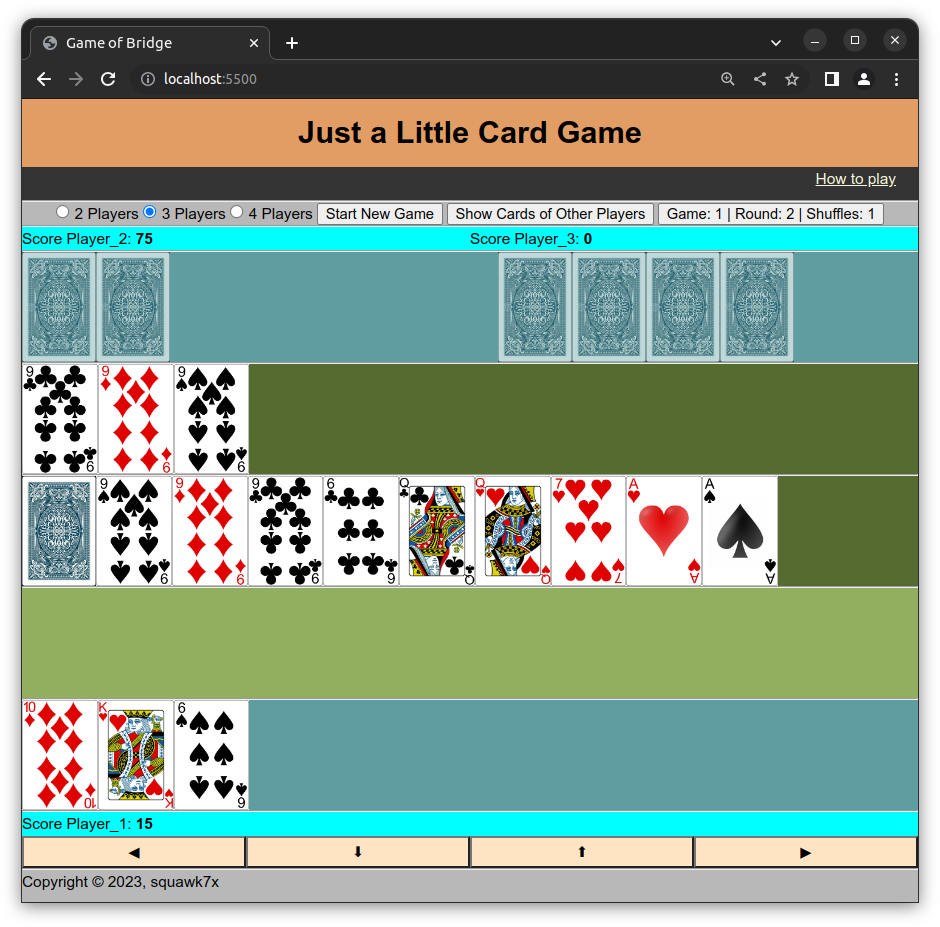
The opaque cards indicate the active player. The "bridge monitor" is located in the second row, displaying the last cards played with the same rank. The red or blue card below represents the blind. A red card indicates that the active player must draw a card. Next to the blind is the stack of cards that have already been played. The field below shows the possible cards for the next move. Finally, at the bottom, the player's hand is displayed, with Player 1 shown specifically.
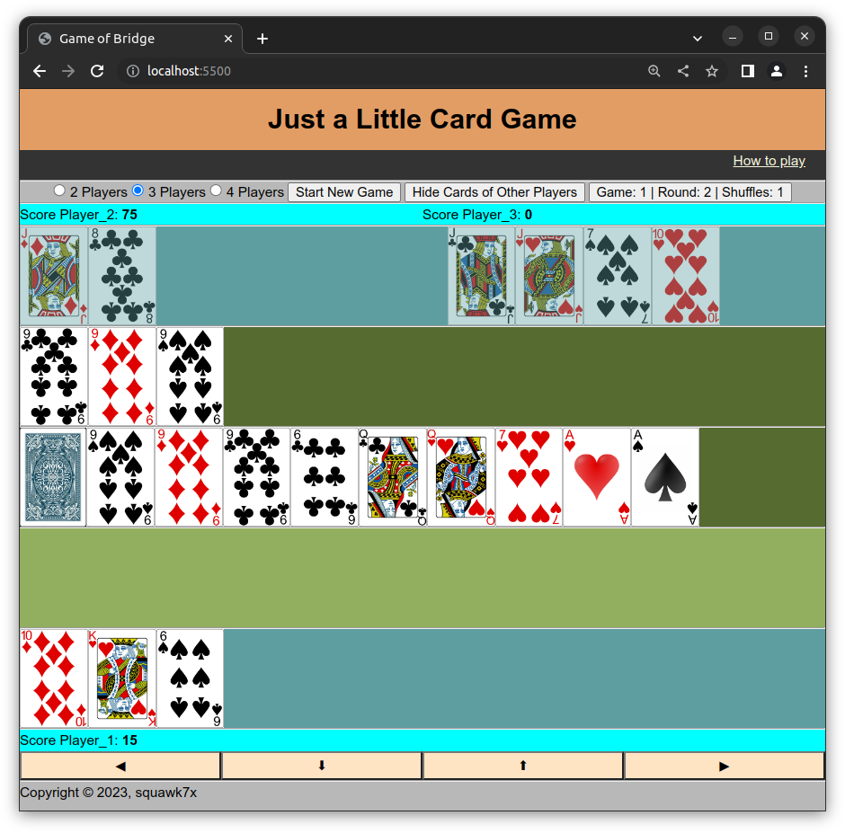
Special Cards:
Special Rule 'Bridge':
The "Bridge" special rule is as follows: If there are four cards in a row on the stack with the same rank, the player who plays the fourth card has the option to choose whether or not to finish the current round. This means that he can decide whether to continue playing or to end the round. In the case of a "Bridge" occurring with four instances of the '6' card, the usual rule of the '6 must be covered' does not apply. The "Bridge" overrides the '6 must be covered' rule in this specific scenario. To keep track of the cards played in sequence with the same rank, the "Bridge Monitor" is used. It is located in the second row on the table and displays the cards played consecutively with the same rank.
Counting:
Players note their points when one player has no more cards or when a "Bridge" is announced. This means that scoring occurs either when a player has played all their cards and has none left, or when the player who played the fourth card in a row with the same rank chooses to end the round by announcing a "Bridge."
The card values are:
| Card | Value |
|---|---|
| 6 | 0 |
| 7 | 0 |
| 8 | 0 |
| 9 | 0 |
| 10 | 10 |
| J | 20 (-20) |
| Q | 10 |
| K | 10 |
| A | 15 |
For example, if a player's hand consists of these cards with individual point values of 10, 15, 10, 0, and 20, the total value of those cards would be 55 points. If a round is finished, these points would be added to the player's score. The player's score accumulates over multiple rounds, reflecting their overall performance in the game.
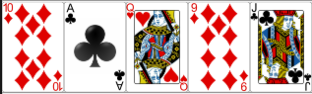Special Counting 'J':
If a player finishes a round with a 'J':
- His score will either be reduced by 20 for each 'J' of his last move, or
- The scores of the other players will be increased by 20 for each 'J' of his last move.
The winner of the current round decides which rule will apply.
If a player reaches exactly 125 points, his score is back on 0!
When the blind is empty and more cards must be drawn, the stack will be reshuffled. The points of this round will then be doubled (tripled, ...). This also applies to the 'J'-points mentioned before. (An empty blind is indicated as card with a grey backside.)
The player with the highest score starts the next round.
The game is over once a player reaches more than 125 points.
Game Control:
The game can be controlled by mouse or keyboard.
| Mouseclick on card | Put card on stack |
| Toggle Decision J Points (-20 or +20) | Toggle Decision 8s (all for next player or share between next players) |
| Keyboard UP ↑ | The most right card in the row of possible cards will be played |
| Toggle Decision Bridge (Yes / No) | |
| Mouseclick on red blind card | Draw card from blind |
| Keyboard DN ↓ | Draw card from blind |
| Toggle Decision J Points (-20/+20) | Toggle Decision 8s (all for next player or share between next players) |
| Keyboard LEFT ← | Toggle possible cards |
| Toggle J Suit (Mouseclick) | |
| Right Mouseclick or Keyboard RIGHT → | Activate next Player / Confirm Bridge / Confirm Count Points / Confirm New Round |
| Push on 'Ok' or Keyboard ENTER | Confirmation of dialog messages |
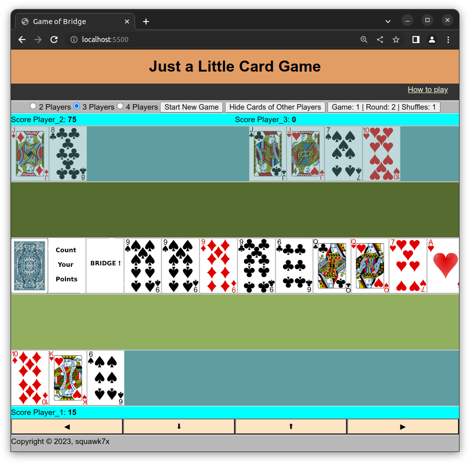 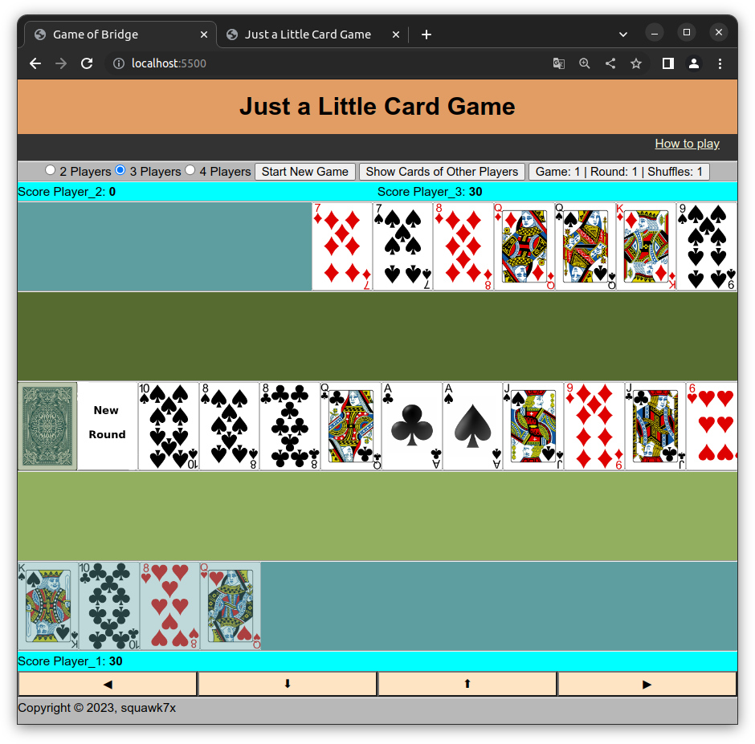
Decisions:
J Suit? - Which suit must follow a 'J'.
When a 'J' is played, a 'Jsuit-Chooser' is shown. It can be clicked or changed using the keyboard 'Left' arrow to select the desired suit for the next move. By default, it toggles to the most common suit in the player's hand deck.
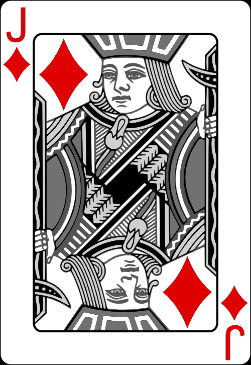 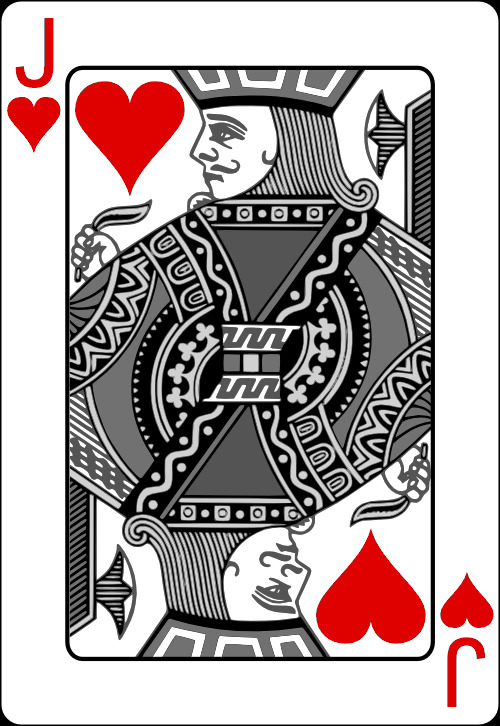 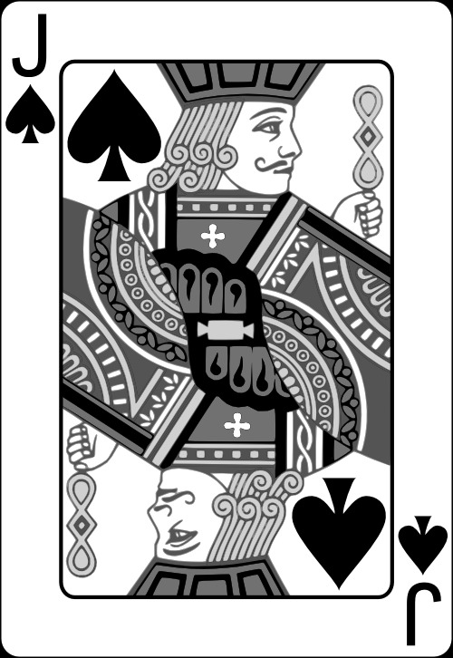 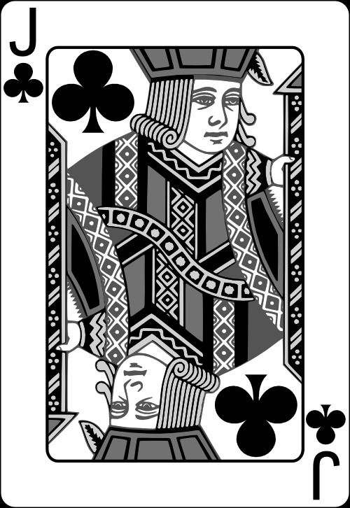Bridge? - Round is finished or round will continue.
When a Bridge situation occurs, the 'Bridge-Chooser' will be shown. It can be clicked or changed using the keyboard 'Up' arrow to toggle the decision between finishing the round or continuing.
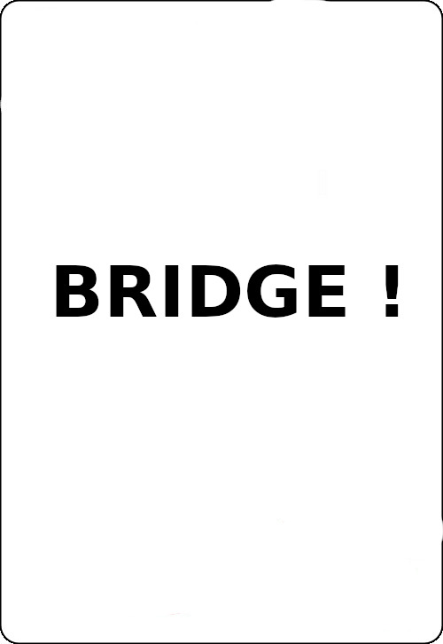 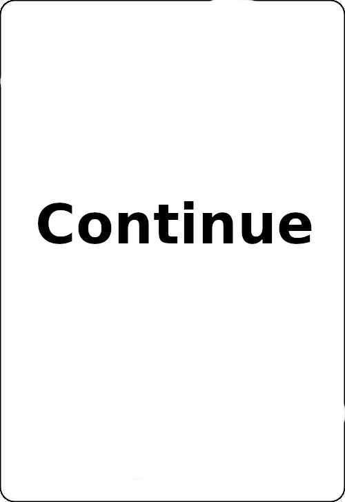J Points? Plus for other players or minus for the active player.
When a round ends with a 'J' on the stack, a 'J Point-Chooser' is shown. It can be clicked or changed using the keyboard 'Down' arrow to toggle the decision between adding points for other players or subtracting points for the active player.
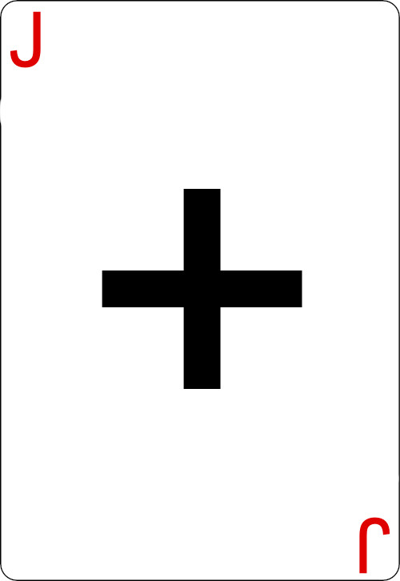 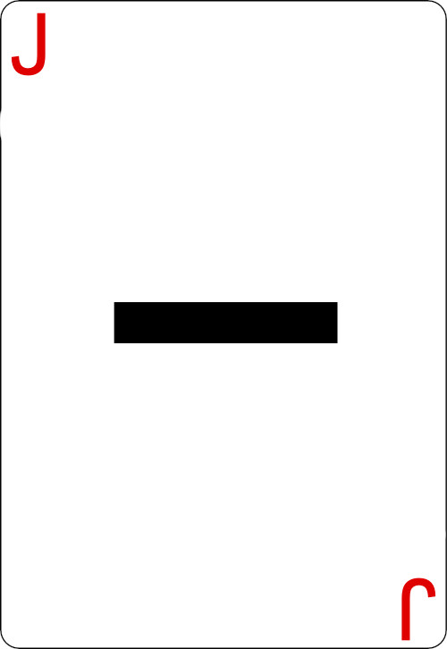8s? Next player must draw 2 cards for each 8 played, or the following players must draw 2 cards.
When 2 or more 8s are played by the same active player, the '8-Chooser' will come up. It can be clicked or changed using the keyboard 'Down' arrow to toggle the decision between the next player drawing 2 cards for each 8 played or the following players drawing 2 cards.
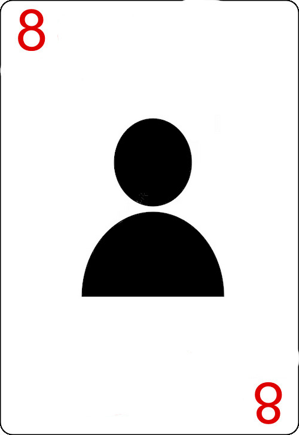 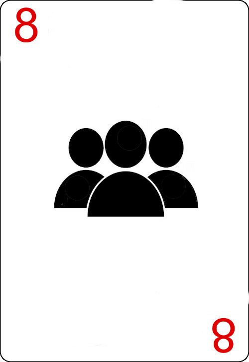If there are multiple decisions to be made (e.g., Bridge yes/no and how to share the '8's between the next player and following players), you can use the mouse or keyboard to toggle the decisions.
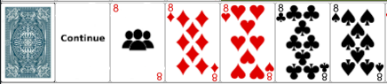 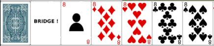 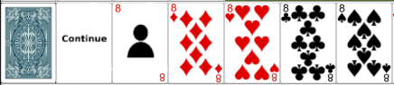
Special Keys (used for testing):
You can 'influence' the game by dispensing additional cards, finishing a round, or making the other players' cards visible.
- v: Toggles the visibility of other players' cards as well as the listing of their possible cards for the next move.
- f: Finishes the current round.
- 6, 7, 8, J, Q, K, A: Adds a card with the corresponding rank and a random suit to the hand deck of the active player.
You can follow and review the moves by opening the developer console in your browser. For example, press F12 in Google Chrome and select 'Console'. The output may look like this:
- Player_3 got ♥6
- Player_1 has played ♦8
- Player_2 has drawn ♦J from the blind
TODOs:
- Logging moves to database
- More sophisticated AI of robot players
- Gaming against human players over network